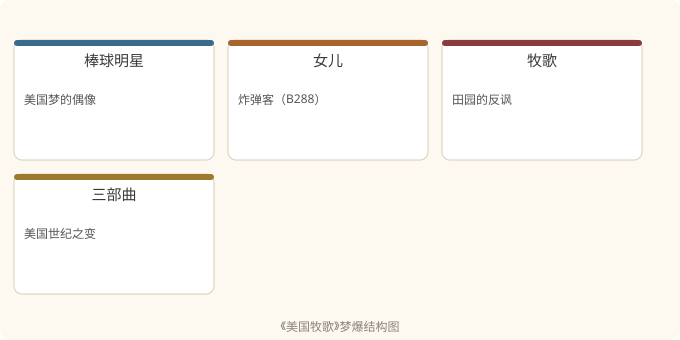

美国牧歌
一、基本信息
| 作者 | 菲利普·罗斯 |
|---|---|
| 成书/出版 | 1997年（Britannica：American Pastoral (1997; film 2016), Roth was awarded a Pulitzer Prize） Philip Roth — Encyclopaedia Britannica（百科全书） |
| 国别/地区 | 美国 |
| 时代 | 现当代 · 21世纪 |
| 体裁 | 长篇小说 |
| 语言 | 英语 |

《美国牧歌》梦爆结构图（主题·结构图）
二、创作背景
Britannica（B288）：'For his next work, American Pastoral (1997; film 2016), Roth was awarded a Pulitzer Prize'；'about a middle-class couple whose daughter becomes a terrorist, is the first entry in the American Trilogy series'（美国三部曲之首——B288）。
作者（B288）：'sharp dialogue and exploration of Jewish middle-class life'。
三、内容脉络
犹太棒球明星'瑞典佬'利沃夫的女儿成为反战炸弹客——美国梦的爆破（通说待核）。
四、主要人物表
| 人物 | 身份 | 说明 |
|---|---|---|
| 瑞典佬（斯威德·利沃夫） | 手套业商人 | （通说待核） |
| 梅瑞狄斯 | 女儿 | 炸弹客（通说待核） |
五、主题与艺术特点
- 美国梦的爆破（书名反讽——通说）。
- 60年代炸弹的年代（通说待核）。
- 犹太中产三代（B288 语境）。
六、影响与评论
- Britannica：普利策奖；美国三部曲之首（B288）。
Philip Roth — Encyclopaedia Britannica（百科全书） - Britannica：2016年电影改编（B288）。
Philip Roth — Encyclopaedia Britannica（百科全书）
七、阅读建议
难点
- 三代人的时间跨度。
- 罗斯的对话密度。
- 《美国牧歌》（上海译文出版社，通说待核）。
- 英文原版（Houghton Mifflin）。
美国三部曲之首。
八、待核实
- 1997年出版（Houghton Mifflin说）核对。
- 瑞典佬/梅瑞狄斯人名核对。
- 三部曲后两部（《我嫁给了共产党人》《人性的污秽》）核对。
本页主要来源
菲利普·罗斯的其他收录作品：美国牧歌